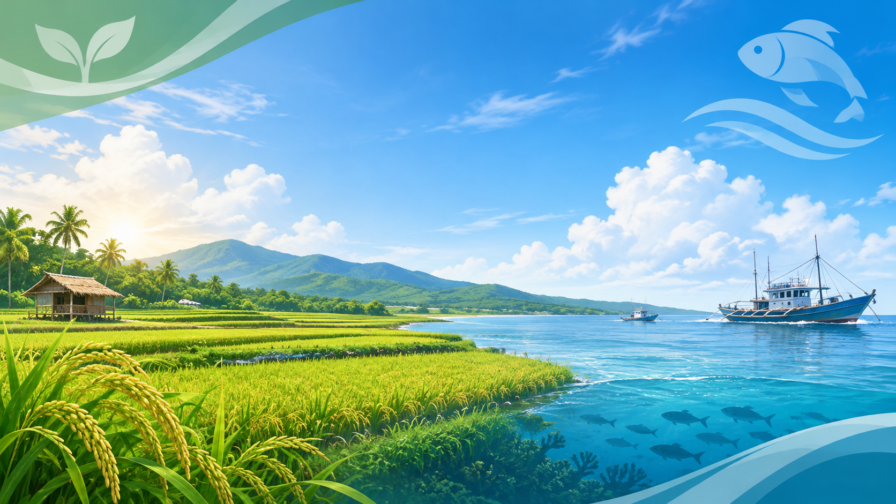

--A field guide to Philippine Agriculture and Fisheries
GROWING
AGRICULTURE
SUSTAINING
FISHERIES
Discover the rich agricultural and fishery resources of the Philippines.
Learn about their products, history, importance, and challenges, and how
they support our economy and provide food for millions of Filipinos.
